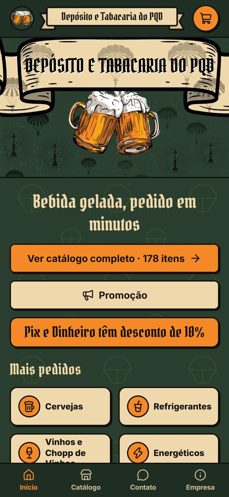
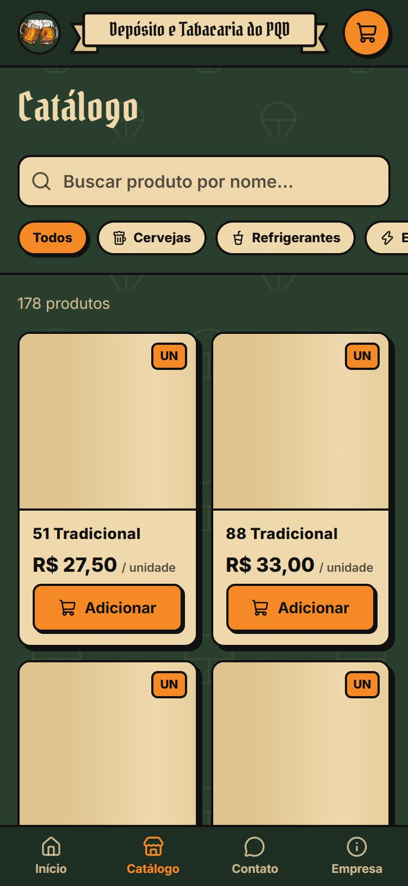
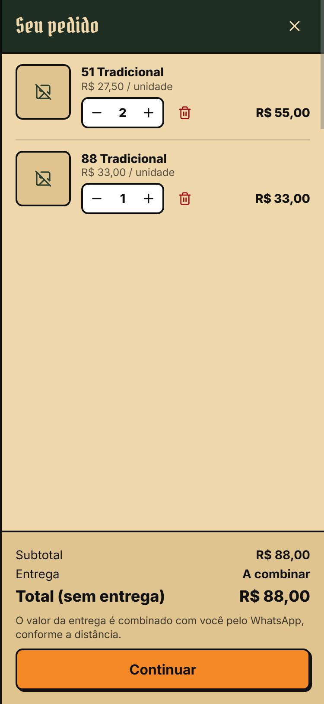
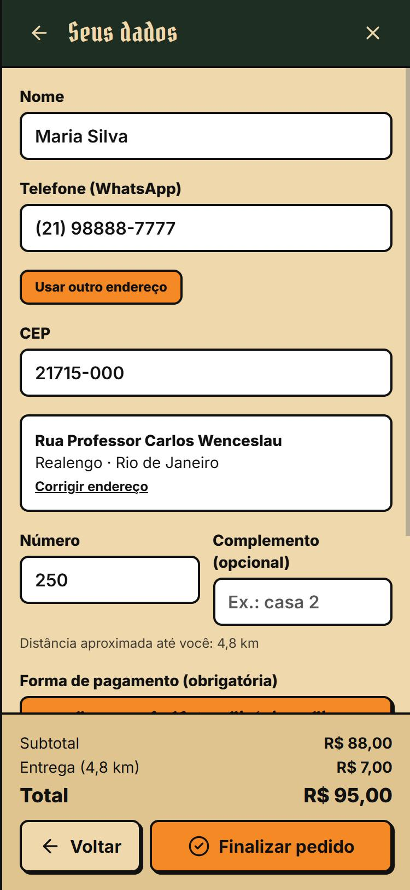
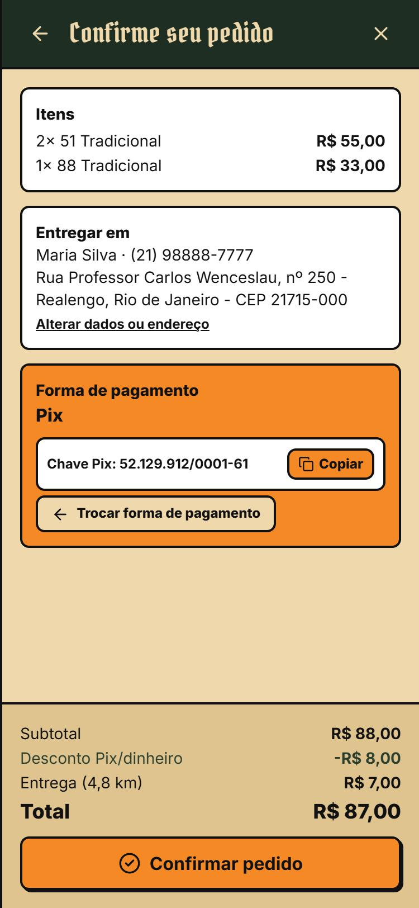
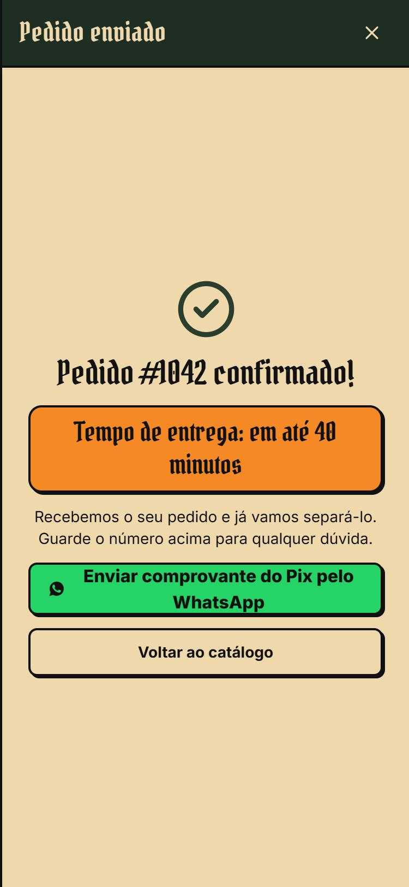
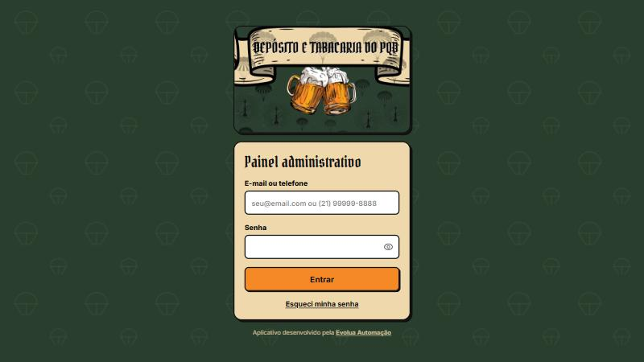
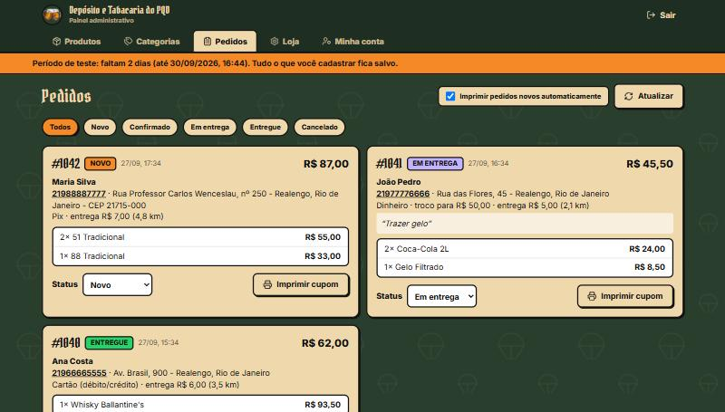
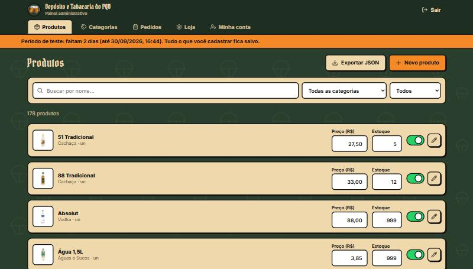
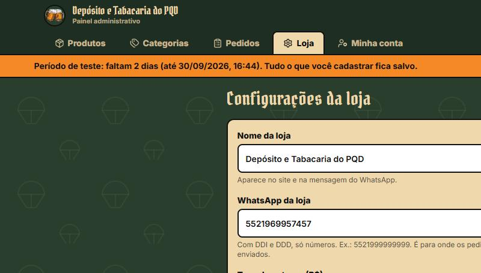

Manual de uso do aplicativo
Um guia simples, passo a passo, para você usar sua loja online e o painel de gerenciamento.
Dica: você não precisa ler tudo de uma vez. Volte aqui sempre que tiver uma dúvida específica.
Este é o site que você compartilha com os clientes. Aqui está exatamente o caminho que eles percorrem, do primeiro clique até o pedido confirmado.

Ao abrir o link da sua loja pelo celular, o cliente vê:

No catálogo, o cliente pode:

Tocando no ícone do carrinho (canto superior direito), o cliente vê tudo o que escolheu e pode:
Quando estiver pronto, ele toca em Continuar.

Aqui o cliente informa nome, telefone e o CEP.
A taxa de entrega também é calculada automaticamente, pela distância entre a loja e o endereço do cliente. Se o endereço não for encontrado, a entrega fica marcada como "a combinar" — e o pedido ainda pode ser finalizado normalmente.
Depois, ele escolhe a forma de pagamento (obrigatória): Pix, Dinheiro ou Cartão.
| Forma de pagamento | Como funciona |
|---|---|
| Pix ou Dinheiro | Tem desconto de 10% sobre o valor dos produtos (a entrega não entra no desconto). No caso do dinheiro, o cliente pode informar pra quanto precisa de troco. |
| Cartão (débito/crédito) | Paga o preço cheio mostrado no site — é pago na entrega, na maquininha. |

Antes de confirmar, o cliente vê um resumo completo do pedido: itens, endereço e forma de pagamento — com um botão para trocar a forma de pagamento sem precisar voltar ao catálogo.
Se ele escolheu Pix, a chave Pix da sua loja já aparece na tela, com um botão de Copiar — assim o cliente pode fazer o pagamento direto pelo aplicativo do banco dele, sem precisar te perguntar a chave.

Depois de tocar em Confirmar pedido, o cliente vê a confirmação com o número do pedido e o tempo estimado de entrega.
Se o pagamento foi por Pix, aparece um botão verde "Enviar comprovante do Pix pelo WhatsApp" — ao tocar, abre o WhatsApp da sua loja com uma mensagem já pronta, citando o número do pedido. É assim que você recebe o comprovante e confirma o pagamento.
É aqui que você acompanha os pedidos, cadastra produtos, ajusta preços e configura a loja. Só você (e quem você autorizar) tem acesso.

Acesse o endereço da sua loja seguido de /admin (ex.: sualoja.com.br/admin).
Entre com seu e-mail (ou telefone) e senha. Esqueceu a senha? Toque em "Esqueci minha senha" — você recebe um link por e-mail para criar uma nova.

Essa é a tela mais importante do dia a dia. Assim que um cliente finaliza um pedido, ele aparece aqui na hora — e o talão já sai sozinho na impressora da loja (com a caixinha "Imprimir pedidos novos automaticamente" marcada).
Em cada pedido você vê: nome e telefone do cliente (toque no telefone pra chamar no WhatsApp), endereço, itens, forma de pagamento e observações.

Na aba Produtos, você vê o catálogo inteiro. Para cada produto:
Na aba Categorias, você pode criar novas categorias, renomear as existentes e reordenar (a ordem que você define aqui é a mesma ordem dos botões no catálogo). Uma categoria só pode ser apagada se não tiver nenhum produto nela.

Na aba Loja, você ajusta o que muda com mais frequência, sem precisar de ajuda técnica:
Sempre que mudar algo aqui, clique em Salvar configurações no final da página. A mudança já vale para os próximos pedidos.
Na aba Minha conta você troca seu e-mail e sua senha de login quando quiser, sem precisar de ajuda.